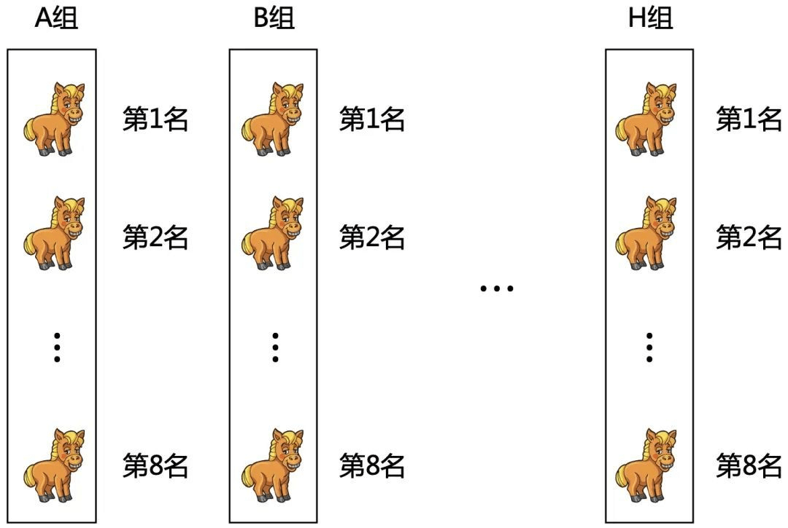
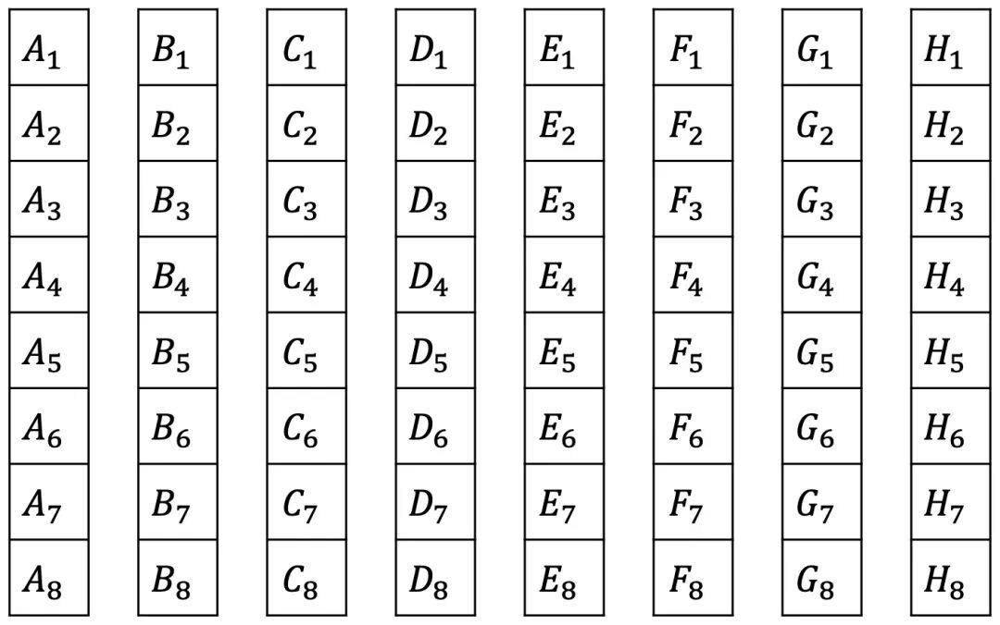
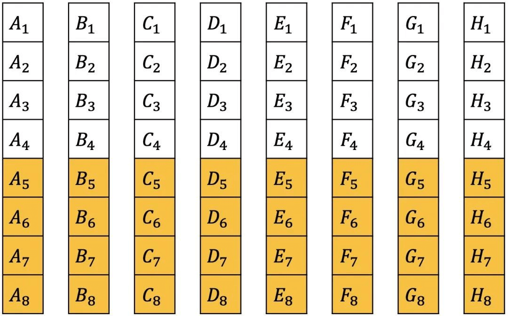
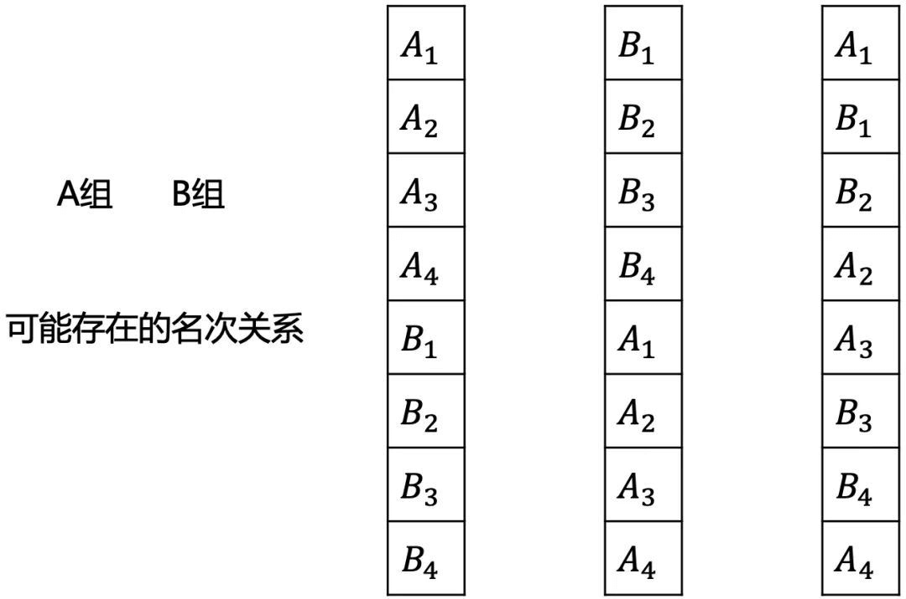
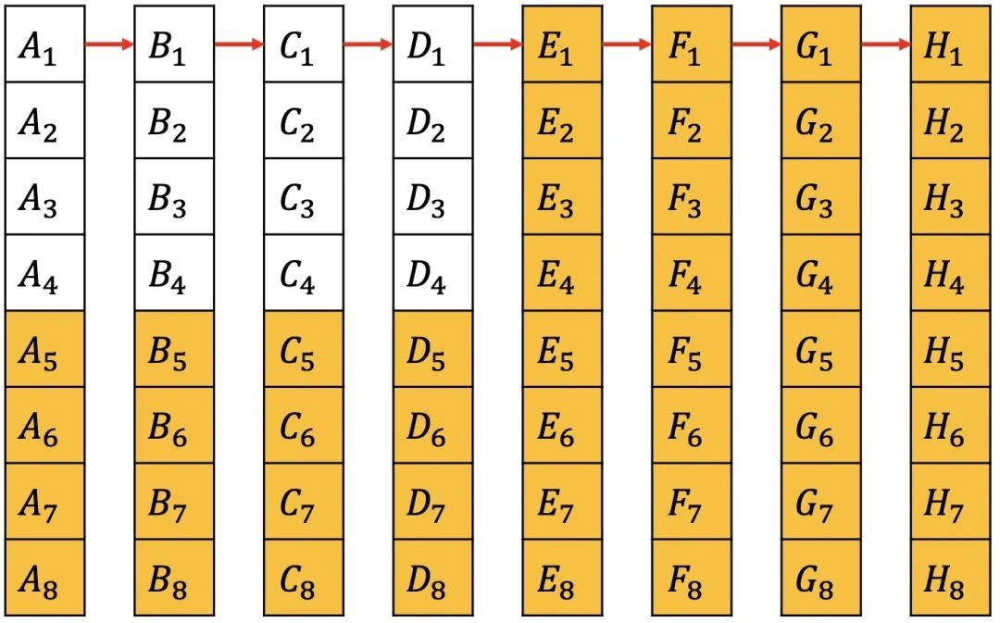
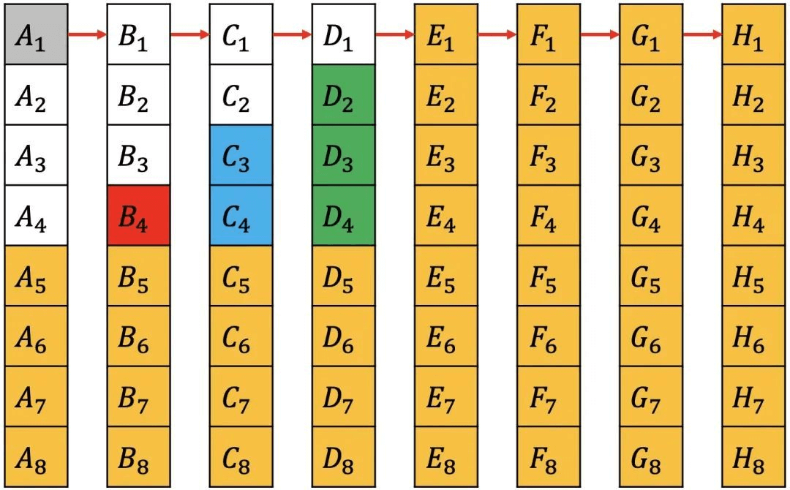
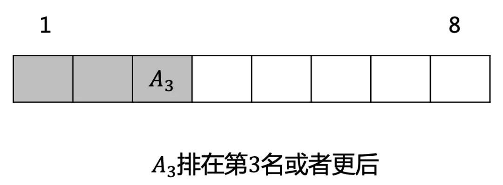

64匹马，8个赛道，找出最快的4匹马，要比赛多少轮？
参考答案
首先把64匹马分成8组，跑8次。每一组都会得到8匹的相对速度，也就是在同一组内的名次。

为了方便描述，我们用编号来表示。如A组里面的名次分别用来表示。

因为我们只需要找出最快的4匹，那么肯定不属于最快的4匹，同理把每一组的后4名先排除。

现在每一组内都有相对名次，但不同的组间是不知道的。如果把A组和B组放一起，下面的情况都可能存在。

因为是要找最快的，所以选择每组的第一名再出来跑一次，这样落后的第一名所在的整组都可以排除。为了描述方便，把最快到最慢的第一名所在的组依次重新命名为A，B...H组。

组间的第一名有了名次关系，可以发现一定不属于前4名，因为都在他们前面。同理可排除。同时是最快的，一定属于前4。那接下来只需在剩下的9匹中找出前3。

除去A3，其余8匹跑一次。如果A2在第3名或者更后，那说明已经选出了前3名，也不用再跑了，否则再取前3和A3一起跑一次，即可得结果。

最多11次一定可以选出最快的4匹。